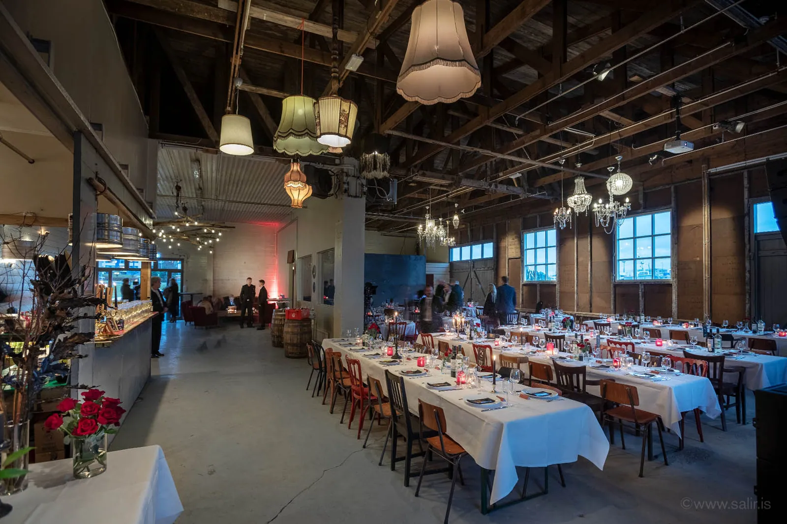
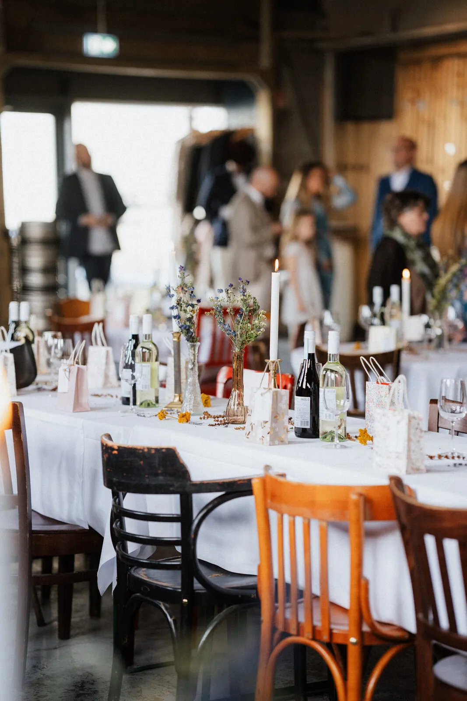
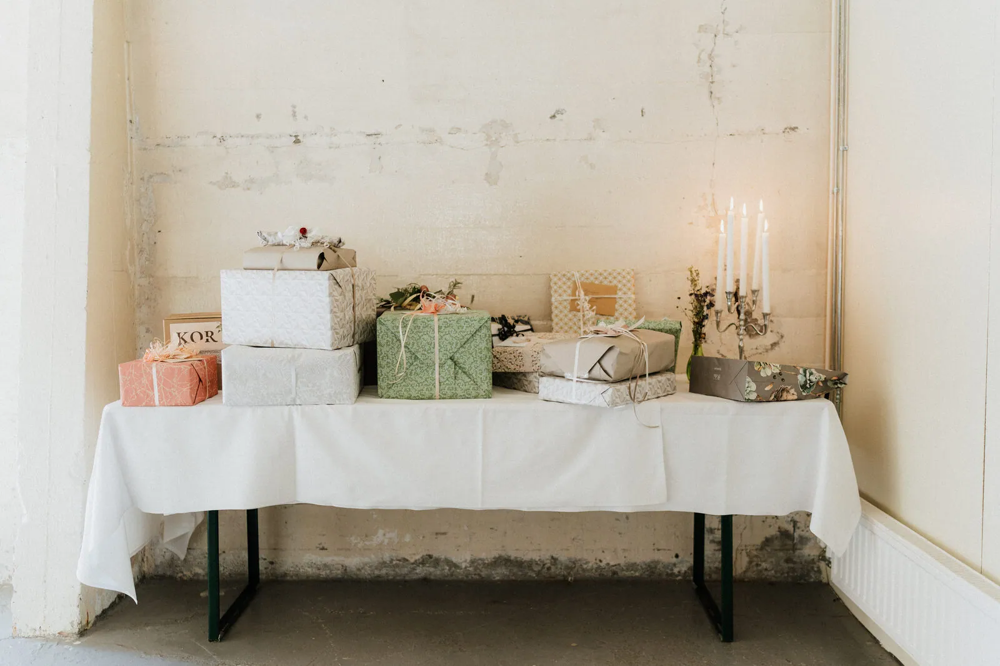
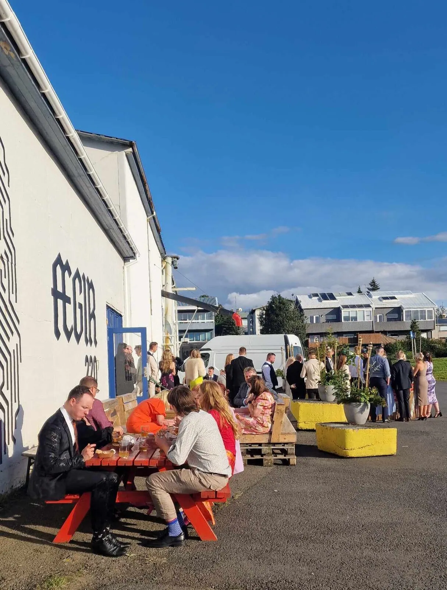
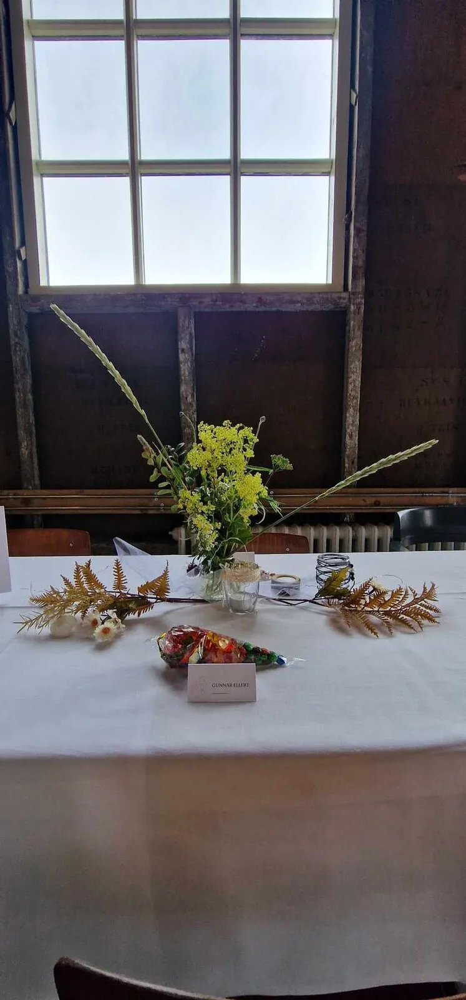
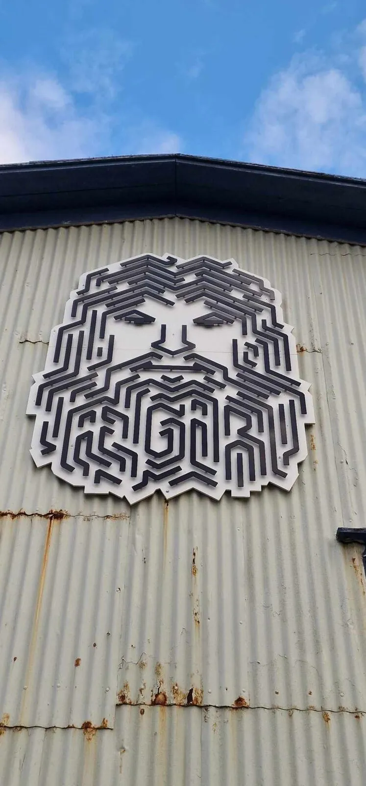

Taproom og veislusalur í gömlu fiskvinnsluhúsi
ÆGIR 220
ÆGIR 220 er til húsa í gömlu fiskþurrkunar- og frystihúsi við gömlu höfnina í Hafnarfirði: hráir timburbitar, hátt til lofts og iðnaðarbragurinn fær að halda sér.
Þetta er taproom og veislusalur brugghússins sjálfs, í sama húsi og Íshús Hafnarfjarðar, skapandi hús með yfir 30 vinnustofum listamanna og hönnuða. Allur bjór er bruggaður í brugghúsinu okkar á Granda.
- Heimilisfang
- Strandgata 90, 220 Hafnarfjörður
- Opnunartímar
- mán–miðEinkaviðburðirfim17:00–22:00fös–lau17:00–00:00sunEinkaviðburðir
- Tölvupóstur
- aegir220@aegirbrugghus.is
Salurinn
- Svið fyrir lifandi tónlist
- Hljóðkerfi
- Skjávarpi
- Dansgólf
- Aðgengi fyrir hjólastóla
- Næg bílastæði
Haltu viðburðinn þinn hjá okkur
9 bjórar á krana + 1 kokteill á krana, allt bruggað í ÆGI BRUGGHÚSI á Granda.
Á krana í kvöld
- 1
 FenrirLager
FenrirLager - 2
 GettódjúsAmerican Lager
GettódjúsAmerican Lager - 3
 RánLite Lager
RánLite Lager - 4
 LokiIPA
LokiIPA - 5
 BarabjórPale Ale
BarabjórPale Ale - 6
 VesenSession IPA
VesenSession IPA - 7
 Bönní Bönní Bönní BönníWhite Ale
Bönní Bönní Bönní BönníWhite Ale - 8
 HóhóhóBrown Ale
HóhóhóBrown Ale - 9
 Dr. Schepsky'sPassion Fruit Sour
Dr. Schepsky'sPassion Fruit Sour - 10—Kokteill á kranaNafn sett af starfsfólki
Dæmi Dæmi um lista. Starfsfólk setur raunverulega listann inn á tveimur mínútum. Starfsmannasíða
Hvað er um að vera
- Dæmi
Tónleikakvöld
fös 21:00
- Dæmi
Markaður í salnum
lau 12:00
Fylgstu með @aegir220 á Instagram og Facebook til að sjá tónleika, markaði og aðra viðburði.
Salurinn í notkun






Gott að vita
150 í sitjandi kvöldverði og 250–300 standandi.
Svið fyrir lifandi tónlist, hljóðkerfi, skjávarpi og dansgólf.
Já, það er aðgengi fyrir hjólastóla.
Vínveitingaleyfið gildir til 01:00.
Já, næg bílastæði.
Fimmtudaga 17:00 til 22:00, föstudaga og laugardaga 17:00 til 00:00. Aðra daga: einkaviðburðir og sérstök tilefni.